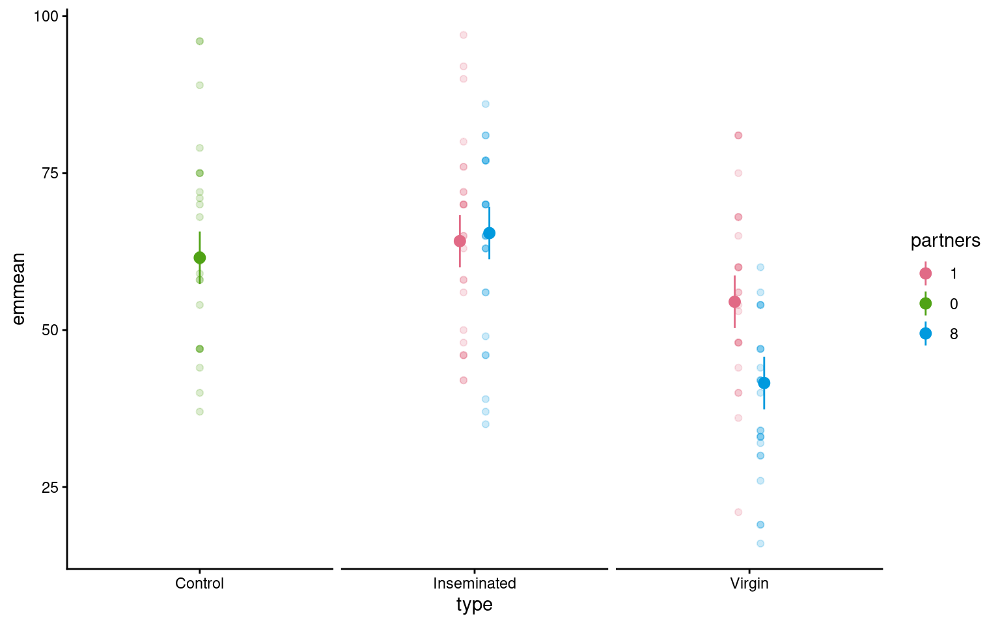
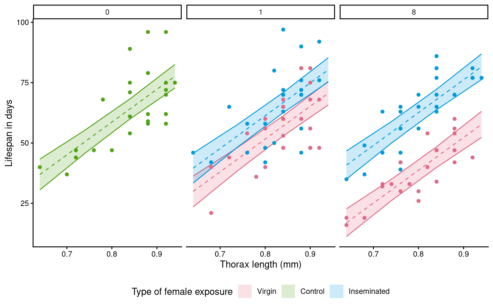

26 Complex models
In the previous chapter Chapter 25 we worked through the process of including/excluding variables based on our causal hypotheses. However, we did not consider the potential role of complex interactions and in this chapter we will work through potential complexity in non-factorial experimental designs.
26.1 Experimental Design
In order to make clear hypothesis statements, and then test these - we need to have a good understanding of the experimental design
Your turn
Write some quick code to understand the distribution of treatment types and partner numbers across the experimental design.
Is the experiment a full factorialEvery possible combination of levels for multiple factors is present, providing a complete understanding of individual factor effects and their interactions design?
The experimental design is
Not all type x partner combinations exist:
Partners = 0 exists only for Control
Partners = 1,8 exist only for Virgin and Inseminated
This doesn’t affect our initial consideration of model structure, but we will revisit this later
26.2 Complex model interactions
Sometimes, the relationship between a covariate and the outcome differs between groups.
We have previously investigated models to examine the causal effect of mating types on male longevity - with five experimental groups
Control: Unmated flies (0 partners)
Virgin - 1 partner: Males paired with a single unmated female
Virgin - 8 partners: Males paired with multiple unmated females
Inseminated - 1 partner: Males paired with a single previously mated female
Inseminated - 8 partners: Males paired with multiple mated females
We now wish to consider some key questions in our experiment around interactions.
Does the number of females a male is paired with change the effect mating type has on male longevity?
Does the size of a male change the effect of mating type on male longevity?
| partners | type | n |
|---|---|---|
| 0 | Control | 25 |
| 1 | Inseminated | 25 |
| 1 | Virgin | 25 |
| 8 | Inseminated | 25 |
| 8 | Virgin | 25 |
This is a non-factorial design - not all type × partner combinations exist. Control flies only appear at 0 partners, while Virgin and Inseminated flies only appear at 1 or 8 partners.
Let’s start by fitting an interaction term with what seems like the obvious model:
\[ \text{longevity}_i = \beta_0 + \beta_1 \, \text{type}_i + \beta_2 \, \text{thorax}_i + \beta_3 \, \text{partners}_i + \beta_4 \, (\text{type}_i \times \text{thorax}_i) + \beta_5 \, (\text{type}_i \times \text{partners}_i) \varepsilon_i \]
This allows the the effect of size on longevity to depend on mating partner.
As a second interaction test it allows the effect of mating partner on longevity to depend on the number of partners
Before fitting new models, we should make sure our data is in the appropriate format:
Question 1. Why is it important for partners to be treated as a factor (rather than numeric)?
Partners is a numeric column - but this does not make sense with our experimental design, there are only three treatments with respect to number of partners, 0,1 or 8. If we leave partners as a numeric in our model, R will attempt to fit a single slope to explain the variance explained by partners as though it is a continuous variable. We have no reason to think the effect of partners is strictly linear, and with only three different observations it makes much more sense to treat this as categorical.
Your turn
Write a linear model that includes type, thorax and partners as main effects and include expressions to include an interaction effect between type:thorax and type:partners.
26.3 Issues with interpreting the fitted model
Let’s take a look at the fitted model now we have included our interaction terms:
Call:
lm(formula = longevity ~ type + thorax + partners + type:thorax +
type:partners, data = dros_clean2)
Residuals:
Min 1Q Median 3Q Max
-26.4634 -6.5711 -0.9363 6.8499 30.1715
Coefficients: (4 not defined because of singularities)
Estimate Std. Error t value Pr(>|t|)
(Intercept) -50.2420 21.5582 -2.331 0.02149 *
typeInseminated 0.1163 27.0616 0.004 0.99658
typeVirgin -15.3390 27.1769 -0.564 0.57355
thorax 136.1268 25.6625 5.304 5.42e-07 ***
partners1 13.1379 3.0940 4.246 4.38e-05 ***
partners8 NA NA NA NA
typeInseminated:thorax 4.7442 32.6180 0.145 0.88461
typeVirgin:thorax -5.7505 32.8543 -0.175 0.86136
typeInseminated:partners1 -14.5153 4.3258 -3.356 0.00107 **
typeVirgin:partners1 NA NA NA NA
typeInseminated:partners8 NA NA NA NA
typeVirgin:partners8 NA NA NA NA
---
Signif. codes: 0 '***' 0.001 '**' 0.01 '*' 0.05 '.' 0.1 ' ' 1
Residual standard error: 10.59 on 117 degrees of freedom
Multiple R-squared: 0.6568, Adjusted R-squared: 0.6362
F-statistic: 31.98 on 7 and 117 DF, p-value: < 2.2e-16The intercept is Control at partners=0 (the reference levels for both factors). But look at what the other parameters mean:
- typeInseminated = -0.116: Difference between Inseminated and Control at partners=0
Problem: Inseminated flies don’t exist at partners=0! This is meaningless.
- partners1 = 13.14: Effect of having 1 partner for Control flies
Problem: Control flies don’t exist at partners=1! This is also meaningless.
Many NA values: R can’t estimate these parameters because the combinations don’t exist
While the model is technically functional - interpretation and coefficients are suboptimal. The Control level only exists at partners = 0, this creates a fundamental mismatch when trying to estimate values
Your turn
We need to revisit our key hypotheses and fix our model accordingly.
Can you write out specific testable questions we might have about interaction effects in our data?
Question 1: Within Virgin flies, does having 1 vs 8 partners affect longevity?
Question 2: Within Inseminated flies, does having 1 vs 8 partners affect longevity?
Question 3: At the same partner level, do Inseminated and Virgin flies differ in longevity?
Question 4: How do our mated treatments compare to unmated Controls?
Question 5: At the same body size, do Inseminated and Virgin flies differ in longevity?
With these questions in place we can “relevel” our factors to set the intercept to a different value - allowing for better comparisons
# By setting Virgin and partners = 1 as the first level in the factors for type and partners this will become the new intercept
dros_clean3 <- dros_clean2 |>
mutate(type = fct_relevel(type, "Virgin"),
partners = fct_relevel(partners, "1"))
# Refit the model
flyls3 <- lm(longevity ~ type +
thorax +
partners +
type:thorax + # specifies the interaction effect
type:partners, # specifies the interaction effect
data = dros_clean3)
summary(flyls3)
Call:
lm(formula = longevity ~ type + thorax + partners + type:thorax +
type:partners, data = dros_clean3)
Residuals:
Min 1Q Median 3Q Max
-26.4634 -6.5711 -0.9363 6.8499 30.1715
Coefficients: (4 not defined because of singularities)
Estimate Std. Error t value Pr(>|t|)
(Intercept) -52.443 17.313 -3.029 0.00302 **
typeControl 2.201 27.649 0.080 0.93668
typeInseminated 0.940 24.094 0.039 0.96895
thorax 130.376 20.514 6.355 4.15e-09 ***
partners0 NA NA NA NA
partners8 -13.138 3.094 -4.246 4.38e-05 ***
typeControl:thorax 5.750 32.854 0.175 0.86136
typeInseminated:thorax 10.495 28.744 0.365 0.71569
typeControl:partners0 NA NA NA NA
typeInseminated:partners0 NA NA NA NA
typeControl:partners8 NA NA NA NA
typeInseminated:partners8 14.515 4.326 3.356 0.00107 **
---
Signif. codes: 0 '***' 0.001 '**' 0.01 '*' 0.05 '.' 0.1 ' ' 1
Residual standard error: 10.59 on 117 degrees of freedom
Multiple R-squared: 0.6568, Adjusted R-squared: 0.6362
F-statistic: 31.98 on 7 and 117 DF, p-value: < 2.2e-16The intercept is Virgin at partners=1 (the reference levels for both factors).
typeControl = 2.2 Difference between Virgin and Control (note control only has 0 partners)
typeInseminated = 0.940 Difference between Inseminated and Virgin at partners=1
Correct: Both treatments have examples of 1 partner.
- partners8 = -13.14 Difference between Virgin flies with 8 partners compare to 1
Correct
- Inseminated:partners8 = 14.515 Adjustment needed for estimating the effect of partners in Inseminated flies
Correct: Total difference in partners8 between Inseminated1 and Inseminated8 = -13.1 + 14.5 = 1.4 Total difference in partners8 between Virgin8 and Inseminated8 = 0.9 + 13.1 + 14.5 = 28.5
NA values: R can’t estimate these parameters because the combinations don’t exist
26.4 Determining a minimally sufficient model
- A significant interaction means the relationship between body size and longevity, and parners and longevity is not the same across partner types.
R compares the nested models via a likelihood ratio test (LRT):
H₀: β₃ = 0 (no interaction; same slope for all partner types)
H₁: β₃ ≠ 0 (interaction; slopes differ)
If the p-value is small (typically < 0.05), the more complex model explains significantly more variation — implying the interaction is meaningful.
| Df | Sum of Sq | RSS | AIC | F value | Pr(>F) | |
|---|---|---|---|---|---|---|
| NA | NA | 13129.69 | 597.7897 | NA | NA | |
| type:thorax | 2 | 14.98103 | 13144.67 | 593.9322 | 0.0667487 | 0.9354658 |
| type:partners | 1 | 1263.55212 | 14393.24 | 607.2750 | 11.2596451 | 0.0010686 |
The drop1 function produces a series of LRT where a term is removed from the model and the difference in variance is compared to the maximal model with an F-test. A significant result indicates a statisticall significant reduction in variance explained.
What does this mean?: We can safely remove terms that are non-significant as not helping explain variance in our data.
26.4.1 Refitting to produce the most optimal model
Having determined that there is evidence for an interaction effect between type:partners but there is not evidence for an interaction between type:thorax we can refit our model:
Call:
lm(formula = longevity ~ type + thorax + partners + type:partners,
data = dros_clean3)
Residuals:
Min 1Q Median 3Q Max
-26.189 -6.599 -0.989 6.408 30.244
Coefficients: (4 not defined because of singularities)
Estimate Std. Error t value Pr(>|t|)
(Intercept) -57.002 10.629 -5.363 4.08e-07 ***
typeControl 7.017 2.973 2.361 0.019874 *
typeInseminated 9.670 2.976 3.249 0.001507 **
thorax 135.819 12.439 10.919 < 2e-16 ***
partners0 NA NA NA NA
partners8 -12.933 3.009 -4.298 3.55e-05 ***
typeControl:partners0 NA NA NA NA
typeInseminated:partners0 NA NA NA NA
typeControl:partners8 NA NA NA NA
typeInseminated:partners8 14.210 4.210 3.375 0.000996 ***
---
Signif. codes: 0 '***' 0.001 '**' 0.01 '*' 0.05 '.' 0.1 ' ' 1
Residual standard error: 10.51 on 119 degrees of freedom
Multiple R-squared: 0.6564, Adjusted R-squared: 0.6419
F-statistic: 45.46 on 5 and 119 DF, p-value: < 2.2e-16This is our best fitting model - and the one we should report
26.5 Pairwise comparisons
Using the emmeans package is a very easy way to produce the estimate mean values (rather than mean differences) for different categories emmeans.
type thorax partners emmean SE df lower.CL upper.CL
Virgin 0.821 1 54.5 2.11 119 50.3 58.7
Control 0.821 1 nonEst NA NA NA NA
Inseminated 0.821 1 64.2 2.10 119 60.0 68.3
Virgin 0.821 0 nonEst NA NA NA NA
Control 0.821 0 61.5 2.11 119 57.3 65.7
Inseminated 0.821 0 nonEst NA NA NA NA
Virgin 0.821 8 41.6 2.12 119 37.4 45.8
Control 0.821 8 nonEst NA NA NA NA
Inseminated 0.821 8 65.4 2.11 119 61.3 69.6
Confidence level used: 0.95 If the term pairs() is included then it will also include post-hoc pairwise comparisons between all levels with a tukey test (adjustment for multiple comparisons), we can turn off p-value adjustments by including the argument adjust = "none".
contrast
Virgin thorax0.82096 partners1 - Control thorax0.82096 partners1
Virgin thorax0.82096 partners1 - Inseminated thorax0.82096 partners1
Virgin thorax0.82096 partners1 - Virgin thorax0.82096 partners0
Virgin thorax0.82096 partners1 - Control thorax0.82096 partners0
Virgin thorax0.82096 partners1 - Inseminated thorax0.82096 partners0
Virgin thorax0.82096 partners1 - Virgin thorax0.82096 partners8
Virgin thorax0.82096 partners1 - Control thorax0.82096 partners8
Virgin thorax0.82096 partners1 - Inseminated thorax0.82096 partners8
Control thorax0.82096 partners1 - Inseminated thorax0.82096 partners1
Control thorax0.82096 partners1 - Virgin thorax0.82096 partners0
Control thorax0.82096 partners1 - Control thorax0.82096 partners0
Control thorax0.82096 partners1 - Inseminated thorax0.82096 partners0
Control thorax0.82096 partners1 - Virgin thorax0.82096 partners8
Control thorax0.82096 partners1 - Control thorax0.82096 partners8
Control thorax0.82096 partners1 - Inseminated thorax0.82096 partners8
Inseminated thorax0.82096 partners1 - Virgin thorax0.82096 partners0
Inseminated thorax0.82096 partners1 - Control thorax0.82096 partners0
Inseminated thorax0.82096 partners1 - Inseminated thorax0.82096 partners0
Inseminated thorax0.82096 partners1 - Virgin thorax0.82096 partners8
Inseminated thorax0.82096 partners1 - Control thorax0.82096 partners8
Inseminated thorax0.82096 partners1 - Inseminated thorax0.82096 partners8
Virgin thorax0.82096 partners0 - Control thorax0.82096 partners0
Virgin thorax0.82096 partners0 - Inseminated thorax0.82096 partners0
Virgin thorax0.82096 partners0 - Virgin thorax0.82096 partners8
Virgin thorax0.82096 partners0 - Control thorax0.82096 partners8
Virgin thorax0.82096 partners0 - Inseminated thorax0.82096 partners8
Control thorax0.82096 partners0 - Inseminated thorax0.82096 partners0
Control thorax0.82096 partners0 - Virgin thorax0.82096 partners8
Control thorax0.82096 partners0 - Control thorax0.82096 partners8
Control thorax0.82096 partners0 - Inseminated thorax0.82096 partners8
Inseminated thorax0.82096 partners0 - Virgin thorax0.82096 partners8
Inseminated thorax0.82096 partners0 - Control thorax0.82096 partners8
Inseminated thorax0.82096 partners0 - Inseminated thorax0.82096 partners8
Virgin thorax0.82096 partners8 - Control thorax0.82096 partners8
Virgin thorax0.82096 partners8 - Inseminated thorax0.82096 partners8
Control thorax0.82096 partners8 - Inseminated thorax0.82096 partners8
estimate SE df t.ratio p.value
nonEst NA NA NA NA
-9.67 2.98 119 -3.249 0.0015
nonEst NA NA NA NA
-7.02 2.97 119 -2.361 0.0199
nonEst NA NA NA NA
12.93 3.01 119 4.298 <0.0001
nonEst NA NA NA NA
-10.95 3.00 119 -3.650 0.0004
nonEst NA NA NA NA
nonEst NA NA NA NA
nonEst NA NA NA NA
nonEst NA NA NA NA
nonEst NA NA NA NA
nonEst NA NA NA NA
nonEst NA NA NA NA
nonEst NA NA NA NA
2.65 2.98 119 0.891 0.3745
nonEst NA NA NA NA
22.60 2.99 119 7.560 <0.0001
nonEst NA NA NA NA
-1.28 2.98 119 -0.428 0.6695
nonEst NA NA NA NA
nonEst NA NA NA NA
nonEst NA NA NA NA
nonEst NA NA NA NA
nonEst NA NA NA NA
nonEst NA NA NA NA
19.95 3.01 119 6.636 <0.0001
nonEst NA NA NA NA
-3.93 3.00 119 -1.311 0.1923
nonEst NA NA NA NA
nonEst NA NA NA NA
nonEst NA NA NA NA
nonEst NA NA NA NA
-23.88 2.97 119 -8.031 <0.0001
nonEst NA NA NA NAIn this example a Tukey HSD test adjustment has been applied - the p-values have been adjusted for a family of 5 estimates representing the five different experimental groups
contrast
Virgin thorax0.82096 partners1 - Control thorax0.82096 partners1
Virgin thorax0.82096 partners1 - Inseminated thorax0.82096 partners1
Virgin thorax0.82096 partners1 - Virgin thorax0.82096 partners0
Virgin thorax0.82096 partners1 - Control thorax0.82096 partners0
Virgin thorax0.82096 partners1 - Inseminated thorax0.82096 partners0
Virgin thorax0.82096 partners1 - Virgin thorax0.82096 partners8
Virgin thorax0.82096 partners1 - Control thorax0.82096 partners8
Virgin thorax0.82096 partners1 - Inseminated thorax0.82096 partners8
Control thorax0.82096 partners1 - Inseminated thorax0.82096 partners1
Control thorax0.82096 partners1 - Virgin thorax0.82096 partners0
Control thorax0.82096 partners1 - Control thorax0.82096 partners0
Control thorax0.82096 partners1 - Inseminated thorax0.82096 partners0
Control thorax0.82096 partners1 - Virgin thorax0.82096 partners8
Control thorax0.82096 partners1 - Control thorax0.82096 partners8
Control thorax0.82096 partners1 - Inseminated thorax0.82096 partners8
Inseminated thorax0.82096 partners1 - Virgin thorax0.82096 partners0
Inseminated thorax0.82096 partners1 - Control thorax0.82096 partners0
Inseminated thorax0.82096 partners1 - Inseminated thorax0.82096 partners0
Inseminated thorax0.82096 partners1 - Virgin thorax0.82096 partners8
Inseminated thorax0.82096 partners1 - Control thorax0.82096 partners8
Inseminated thorax0.82096 partners1 - Inseminated thorax0.82096 partners8
Virgin thorax0.82096 partners0 - Control thorax0.82096 partners0
Virgin thorax0.82096 partners0 - Inseminated thorax0.82096 partners0
Virgin thorax0.82096 partners0 - Virgin thorax0.82096 partners8
Virgin thorax0.82096 partners0 - Control thorax0.82096 partners8
Virgin thorax0.82096 partners0 - Inseminated thorax0.82096 partners8
Control thorax0.82096 partners0 - Inseminated thorax0.82096 partners0
Control thorax0.82096 partners0 - Virgin thorax0.82096 partners8
Control thorax0.82096 partners0 - Control thorax0.82096 partners8
Control thorax0.82096 partners0 - Inseminated thorax0.82096 partners8
Inseminated thorax0.82096 partners0 - Virgin thorax0.82096 partners8
Inseminated thorax0.82096 partners0 - Control thorax0.82096 partners8
Inseminated thorax0.82096 partners0 - Inseminated thorax0.82096 partners8
Virgin thorax0.82096 partners8 - Control thorax0.82096 partners8
Virgin thorax0.82096 partners8 - Inseminated thorax0.82096 partners8
Control thorax0.82096 partners8 - Inseminated thorax0.82096 partners8
estimate SE df t.ratio p.value
nonEst NA NA NA NA
-9.67 2.98 119 -3.249 0.0129
nonEst NA NA NA NA
-7.02 2.97 119 -2.361 0.1336
nonEst NA NA NA NA
12.93 3.01 119 4.298 0.0003
nonEst NA NA NA NA
-10.95 3.00 119 -3.650 0.0035
nonEst NA NA NA NA
nonEst NA NA NA NA
nonEst NA NA NA NA
nonEst NA NA NA NA
nonEst NA NA NA NA
nonEst NA NA NA NA
nonEst NA NA NA NA
nonEst NA NA NA NA
2.65 2.98 119 0.891 0.8996
nonEst NA NA NA NA
22.60 2.99 119 7.560 <0.0001
nonEst NA NA NA NA
-1.28 2.98 119 -0.428 0.9929
nonEst NA NA NA NA
nonEst NA NA NA NA
nonEst NA NA NA NA
nonEst NA NA NA NA
nonEst NA NA NA NA
nonEst NA NA NA NA
19.95 3.01 119 6.636 <0.0001
nonEst NA NA NA NA
-3.93 3.00 119 -1.311 0.6849
nonEst NA NA NA NA
nonEst NA NA NA NA
nonEst NA NA NA NA
nonEst NA NA NA NA
-23.88 2.97 119 -8.031 <0.0001
nonEst NA NA NA NA
P value adjustment: tukey method for comparing a family of 5 estimates It depends - adjusted p-values are more conservative - and there is a good reason to use these (preventing Type 1 errors) - especially if we didn’t have a clear set of initial hypotheses. However, in this example we have a clear experimental design, and we aren’t actually interested in looking at every comparison possible. We are interested in the difference between the three treatment groups and whether partner number changes this. With these careful planned contrasts we should be ok using unadjusted p-values
26.6 Visualising models
We can make visualisations of our models with ggplot().
Because we have included thorax as a stabilising predictor in our models we have some options on how to present our results:
Thorax does not interact with other predictors - as such it is a constant and
emmeanshas set these to the mean value within the dataset, so comparisons are constant between categories at the average value of all continuous variables.If we wish to model continuous predictions we need to specify these by asking for model predictions across the observed range of thorax values
means |>
as_tibble() |>
ggplot(aes(x=type, y = emmean, colour = partners, fill = partners))+
geom_pointrange(aes(ymin=lower.CL, ymax=upper.CL), position = position_dodge(width =.2))+
geom_point(data = dros_clean3,
aes(x = type,
y = longevity),
show.legend = FALSE,
alpha = .2,
position = position_dodge(width =.2))+
scale_colour_discrete_qualitative() +
theme_classic()+
theme(strip.text = element_blank())+
facet_wrap(~factor(type,
levels = c("Control",
"Inseminated",
"Virgin")),
scales = "free_x")
# use the final model to produce model predictions set to the new dataframe
emmeans::emmeans(flyls4,
specs = ~ type + thorax + partners,
at = list(thorax = seq(0.64,0.94, .1))) |>
as_tibble() |>
ggplot(
aes(x=thorax,
y = emmean,
colour = type,
fill = type))+
geom_ribbon(aes(ymin=lower.CL,
ymax=upper.CL),
alpha = 0.2)+
geom_line(linetype = "dashed",
show.legend = FALSE)+
geom_point(data = dros_clean,
aes(x = thorax,
y = longevity),
show.legend = FALSE)+
scale_fill_discrete_qualitative() +
scale_colour_discrete_qualitative() +
labs(y = "Lifespan in days",
x = "Thorax length (mm)",
fill = "Type of female exposure")+
guides(colour = "none")+
theme_classic()+
theme(legend.position = "bottom")+
facet_wrap(~factor(partners,
levels = c(0, 1, 8)))
Before we can interpret the terms in our model, we should check to see if this is even a good way of fitting and measuring our data. We should check the assumptions of our model are being met.
R has ways to do this with the plot() function, but the performance packages Lüdecke et al. (2025) from easystats also gives nice residual checks:
Posterior Predictive Check – Assesses whether the model’s predicted values align well with the observed data, indicating good model fit.
Linearity Check – Ensures that the relationship between predictor variables and the outcome is approximately linear, a key assumption of linear regression.
Homogeneity of Variance Check – Tests whether residuals (errors) have constant variance across all levels of predictors, known as homoscedasticity.
Influential Observation Check – Identifies individual data points that have a disproportionately large impact on the model’s estimates.
Collinearity Check – Detects whether predictor variables are highly correlated with each other, which can distort model estimates and reduce interpretability.
Normality Check – Examines whether the residuals of the model follow a normal distribution, an assumption necessary for reliable inference in linear regression.
26.6.1 Homogeneity of variance
Question - IS the assumption of homogeneity of variance met?
Mostly - the reference line is fairly flat (there is a slight curve).
It looks as though there might be some increasing heterogeneity with larger values, though very minor.
VERDICT, pretty much ok, should be fine for making inferences.
With a slight curvature this could indicate that you might get a better fit with a transformation, or perhaps that there is a missing variable that if included in the model would improve the residuals. In this instance I wouldn’t be overly concerned. See here for a great explainer on intepreting residuals1.
26.6.2 Normality of residuals
Yes - the QQplot looks pretty good, a very minor indication of a right skew, but nothing to worry about.
[Interpreting QQ plots][What is a Quantile-Quantile (QQ) plot?]
26.6.3 Collinearity
Question - IS their an issue with Collinearity?
What does it mean to have (multi)collinearity?
This is when one or more predictors are correlated - leading to increased uncertainty about their contributions to the outcome variable.
The result is wider standard error and confidence intervals.
While there are many discussions about what can be done with multicollinearity - I subscribed to the views outlined here.
It should be reported - but that’s it - it represents genuine uncertainty around the contributions of your predictors.
| Term | VIF | VIF_CI_low | VIF_CI_high | SE_factor | Tolerance | Tolerance_CI_low | Tolerance_CI_high |
|---|---|---|---|---|---|---|---|
| type | 2.407136 | 1.916931 | 3.159412 | 1.245590 | 0.4154314 | 0.3165146 | 0.5216672 |
| thorax | 1.042019 | 1.000713 | 3.475709 | 1.020793 | 0.9596755 | 0.2877111 | 0.9992873 |
| partners | 2.459411 | 1.954827 | 3.230645 | 1.252298 | 0.4066014 | 0.3095357 | 0.5115541 |
| type:partners | 3.208678 | 2.499097 | 4.254132 | 1.791278 | 0.3116548 | 0.2350656 | 0.4001445 |
https://www.qualtrics.com/support/stats-iq/analyses/regression-guides/interpreting-residual-plots-improve-regression/↩︎